v4_val_0001
shoot retention 0.997 | root/base overlap 0.009 | learned points kept 3/7 | proposed anchor missing
previous manual audit: path=blank, base=wrong · 2点有误应再偏左上一点；1/3为根须应舍去
绿区是拟用于地上部关键点与路径的有效域；黄区是自动定位的shoot侧过渡带。红叉点将被排除，黄色星号只能从现有学习点中选择。
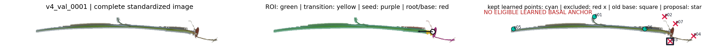
v4_val_0002
shoot retention 0.995 | root/base overlap 0.000 | learned points kept 3/6 | proposed anchor missing
previous manual audit: path=pass, base=correct · 0/3为根须应舍去
绿区是拟用于地上部关键点与路径的有效域；黄区是自动定位的shoot侧过渡带。红叉点将被排除，黄色星号只能从现有学习点中选择。
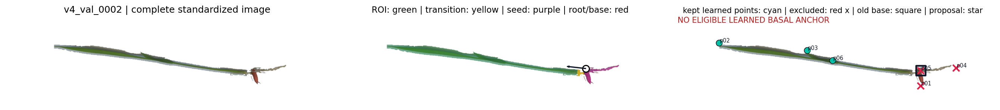
v4_val_0003
shoot retention 0.998 | root/base overlap 0.002 | learned points kept 4/7 | proposed anchor missing
previous manual audit: path=pass, base=wrong · 4点有误应再偏下一点；2/3为根须应舍去
绿区是拟用于地上部关键点与路径的有效域；黄区是自动定位的shoot侧过渡带。红叉点将被排除，黄色星号只能从现有学习点中选择。
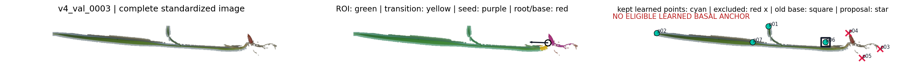
v4_val_0004
shoot retention 0.993 | root/base overlap 0.019 | learned points kept 1/6 | proposed anchor missing
previous manual audit: path=pass, base=wrong · 种子部位非根基部，点1的判断应向上移动，2为根须舍去。
绿区是拟用于地上部关键点与路径的有效域；黄区是自动定位的shoot侧过渡带。红叉点将被排除，黄色星号只能从现有学习点中选择。
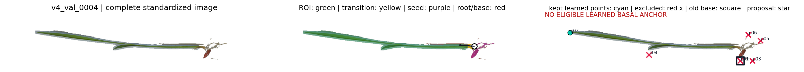
v4_val_0005
shoot retention 0.942 | root/base overlap 0.000 | learned points kept 2/7 | proposed anchor missing
previous manual audit: path=fail, base=wrong · 下方小片叶漏叶，0点基部点应再下移，2/3/4点为根须应舍去
绿区是拟用于地上部关键点与路径的有效域；黄区是自动定位的shoot侧过渡带。红叉点将被排除，黄色星号只能从现有学习点中选择。
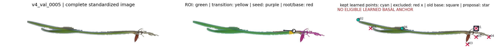
v4_val_0006
shoot retention 0.999 | root/base overlap 0.186 | learned points kept 3/6 | proposed anchor p04
previous manual audit: path=pass, base=correct · 将1点（根须）舍去即可
绿区是拟用于地上部关键点与路径的有效域；黄区是自动定位的shoot侧过渡带。红叉点将被排除，黄色星号只能从现有学习点中选择。
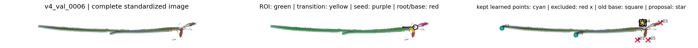
v4_val_0007
shoot retention 0.991 | root/base overlap 0.019 | learned points kept 1/6 | proposed anchor missing
previous manual audit: path=pass, base=wrong · 0点有误应再偏下；1/3为根须应舍去
绿区是拟用于地上部关键点与路径的有效域；黄区是自动定位的shoot侧过渡带。红叉点将被排除，黄色星号只能从现有学习点中选择。
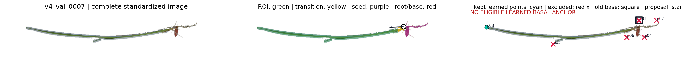
v4_val_0008
shoot retention 0.947 | root/base overlap 0.029 | learned points kept 1/5 | proposed anchor missing
previous manual audit: path=pass, base=wrong · 点4根部判断有误应向下移，1和2为根须应舍去
绿区是拟用于地上部关键点与路径的有效域；黄区是自动定位的shoot侧过渡带。红叉点将被排除，黄色星号只能从现有学习点中选择。
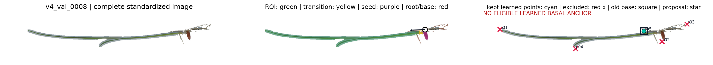
v4_val_0009
shoot retention 0.998 | root/base overlap 0.000 | learned points kept 4/5 | proposed anchor missing
previous manual audit: path=pass, base=correct ·
绿区是拟用于地上部关键点与路径的有效域；黄区是自动定位的shoot侧过渡带。红叉点将被排除，黄色星号只能从现有学习点中选择。
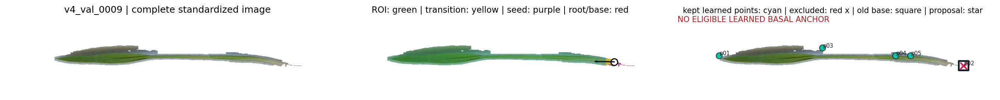
v4_val_0010
shoot retention 0.995 | root/base overlap 0.027 | learned points kept 5/11 | proposed anchor missing
previous manual audit: path=blank, base=wrong · 2，7，8为根须，不予考虑，根系基部（6）错误，应为相邻区域位于苗上位置
绿区是拟用于地上部关键点与路径的有效域；黄区是自动定位的shoot侧过渡带。红叉点将被排除，黄色星号只能从现有学习点中选择。
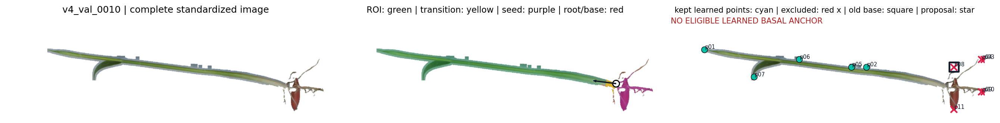
v4_val_0011
shoot retention 0.944 | root/base overlap 0.000 | learned points kept 2/6 | proposed anchor missing
previous manual audit: path=pass, base=wrong · 基部点2判断错误，应在种子上方或旁边为根部点，此外点3 仍为根须，应舍去
绿区是拟用于地上部关键点与路径的有效域；黄区是自动定位的shoot侧过渡带。红叉点将被排除，黄色星号只能从现有学习点中选择。
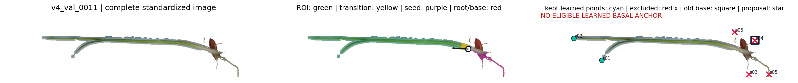
v4_val_0012
shoot retention 0.999 | root/base overlap 0.000 | learned points kept 1/3 | proposed anchor missing
previous manual audit: path=pass, base=correct ·
绿区是拟用于地上部关键点与路径的有效域；黄区是自动定位的shoot侧过渡带。红叉点将被排除，黄色星号只能从现有学习点中选择。
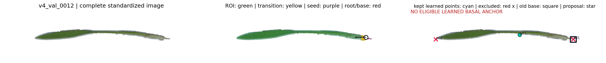
v4_val_0013
shoot retention 0.970 | root/base overlap 0.019 | learned points kept 5/9 | proposed anchor p03
previous manual audit: path=pass, base=correct · 两条可见叶片均已恢复，主叶和下方侧叶连接关系正确，根须不在考虑范围内，点3舍去
绿区是拟用于地上部关键点与路径的有效域；黄区是自动定位的shoot侧过渡带。红叉点将被排除，黄色星号只能从现有学习点中选择。
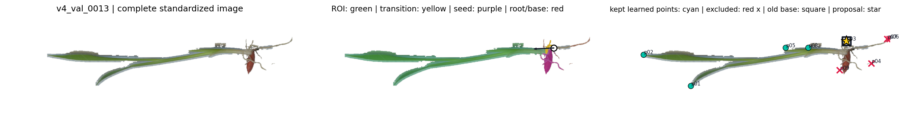
v4_val_0014
shoot retention 0.987 | root/base overlap 0.002 | learned points kept 4/8 | proposed anchor p08
previous manual audit: path=pass, base=blank · 1,2,4,5为种子及根须点应舍去
绿区是拟用于地上部关键点与路径的有效域；黄区是自动定位的shoot侧过渡带。红叉点将被排除，黄色星号只能从现有学习点中选择。
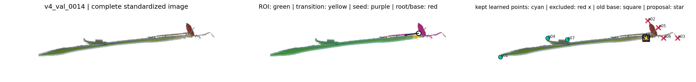
v4_val_0015
shoot retention 0.944 | root/base overlap 0.014 | learned points kept 3/9 | proposed anchor missing
previous manual audit: path=fail, base=wrong · 4基部点定义有误，应再下移一些，1、2、3、7点皆为根须，应舍去
绿区是拟用于地上部关键点与路径的有效域；黄区是自动定位的shoot侧过渡带。红叉点将被排除，黄色星号只能从现有学习点中选择。
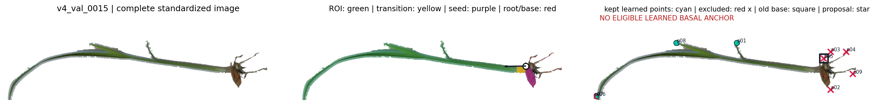
v4_val_0016
shoot retention 0.928 | root/base overlap 0.001 | learned points kept 2/7 | proposed anchor missing
previous manual audit: path=fail, base=blank · 1，4，5为根须，应舍去，根部（3）判断有偏差
绿区是拟用于地上部关键点与路径的有效域；黄区是自动定位的shoot侧过渡带。红叉点将被排除，黄色星号只能从现有学习点中选择。
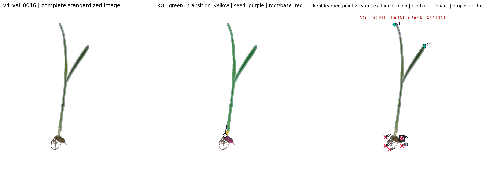
v4_val_0017
shoot retention 0.907 | root/base overlap 0.002 | learned points kept 3/7 | proposed anchor missing
previous manual audit: path=blank, base=wrong · 3点有误应再偏左上一点；2为根须应舍去
绿区是拟用于地上部关键点与路径的有效域；黄区是自动定位的shoot侧过渡带。红叉点将被排除，黄色星号只能从现有学习点中选择。
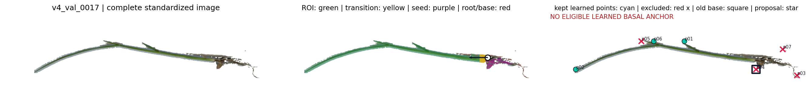
v4_val_0018
shoot retention 0.954 | root/base overlap 0.030 | learned points kept 4/10 | proposed anchor missing
previous manual audit: path=pass, base=wrong · 6点有误；3/4/5为根须应舍去
绿区是拟用于地上部关键点与路径的有效域；黄区是自动定位的shoot侧过渡带。红叉点将被排除，黄色星号只能从现有学习点中选择。
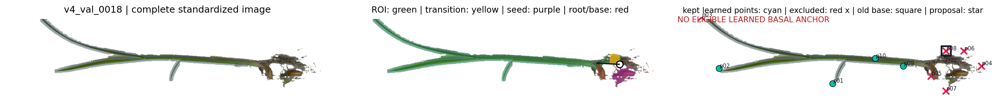
v4_val_0019
shoot retention 0.950 | root/base overlap 0.100 | learned points kept 2/6 | proposed anchor missing
previous manual audit: path=fail, base=wrong · 小叶片未被检测到，基部根系应为种子上方或旁边，而非下方的0点位置，根须不应在路径考虑范围内
绿区是拟用于地上部关键点与路径的有效域；黄区是自动定位的shoot侧过渡带。红叉点将被排除，黄色星号只能从现有学习点中选择。
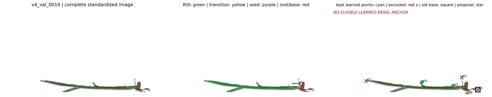
v4_val_0020
shoot retention 0.910 | root/base overlap 0.014 | learned points kept 3/7 | proposed anchor missing
previous manual audit: path=pass, base=wrong · 根基部点5错误，3、4、6点为根须舍去
绿区是拟用于地上部关键点与路径的有效域；黄区是自动定位的shoot侧过渡带。红叉点将被排除，黄色星号只能从现有学习点中选择。
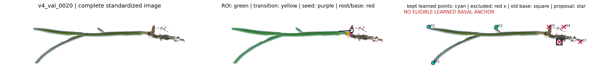
v4_val_0021
shoot retention 0.977 | root/base overlap 0.000 | learned points kept 1/6 | proposed anchor missing
previous manual audit: path=pass, base=wrong · 3再偏下一点的位置才应为根基部点，4点有误；2为根须应舍去
绿区是拟用于地上部关键点与路径的有效域；黄区是自动定位的shoot侧过渡带。红叉点将被排除，黄色星号只能从现有学习点中选择。
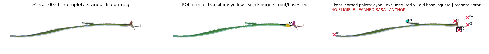
v4_val_0022
shoot retention 0.979 | root/base overlap 0.000 | learned points kept 1/5 | proposed anchor missing
previous manual audit: path=pass, base=wrong · 1点有误；2、3为根须应舍去
绿区是拟用于地上部关键点与路径的有效域；黄区是自动定位的shoot侧过渡带。红叉点将被排除，黄色星号只能从现有学习点中选择。
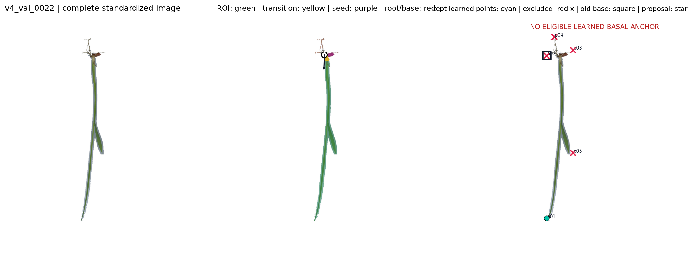
v4_val_0023
shoot retention 0.994 | root/base overlap 0.000 | learned points kept 2/6 | proposed anchor missing
previous manual audit: path=pass, base=wrong · 0点有误应再偏下一点；2为根须应舍去
绿区是拟用于地上部关键点与路径的有效域；黄区是自动定位的shoot侧过渡带。红叉点将被排除，黄色星号只能从现有学习点中选择。
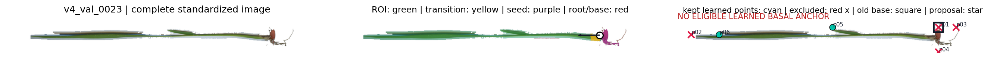
v4_val_0024
shoot retention 0.980 | root/base overlap 0.002 | learned points kept 1/4 | proposed anchor missing
previous manual audit: path=pass, base=wrong · 0点有误应再偏上一点；3为根须应舍去
绿区是拟用于地上部关键点与路径的有效域；黄区是自动定位的shoot侧过渡带。红叉点将被排除，黄色星号只能从现有学习点中选择。
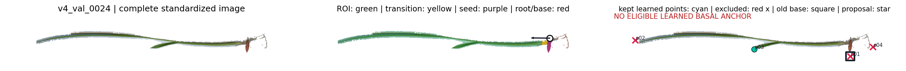
v4_val_0025
shoot retention 0.997 | root/base overlap 0.014 | learned points kept 3/7 | proposed anchor missing
previous manual audit: path=fail, base=wrong · 1，2，4为根须，舍去。点6基部判断错误，应为1附近的点
绿区是拟用于地上部关键点与路径的有效域；黄区是自动定位的shoot侧过渡带。红叉点将被排除，黄色星号只能从现有学习点中选择。
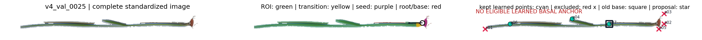
v4_val_0026
shoot retention 0.989 | root/base overlap 0.038 | learned points kept 2/6 | proposed anchor missing
previous manual audit: path=pass, base=wrong · 点4应在点1旁边才应符合根部，1和3为根须不考虑
绿区是拟用于地上部关键点与路径的有效域；黄区是自动定位的shoot侧过渡带。红叉点将被排除，黄色星号只能从现有学习点中选择。
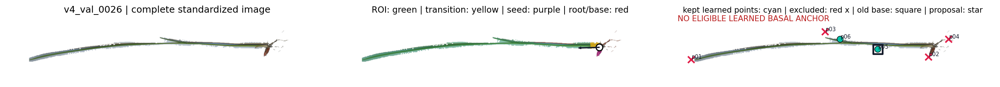
v4_val_0027
shoot retention 0.981 | root/base overlap 0.000 | learned points kept 3/7 | proposed anchor missing
previous manual audit: path=pass, base=wrong · 5点有误应再偏上一点；1/3为根须应舍去
绿区是拟用于地上部关键点与路径的有效域；黄区是自动定位的shoot侧过渡带。红叉点将被排除，黄色星号只能从现有学习点中选择。
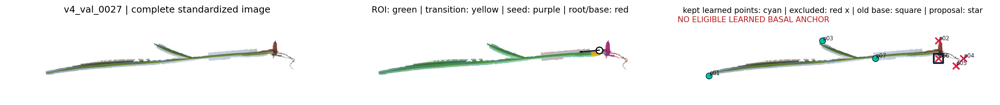
v4_val_0028
shoot retention 0.909 | root/base overlap 0.000 | learned points kept 2/6 | proposed anchor missing
previous manual audit: path=fail, base=wrong · 2点有误应再偏左上；0/1为根须应舍去，路径有问题，3,和4点下方分叉的叶片着生位置太靠上方了
绿区是拟用于地上部关键点与路径的有效域；黄区是自动定位的shoot侧过渡带。红叉点将被排除，黄色星号只能从现有学习点中选择。
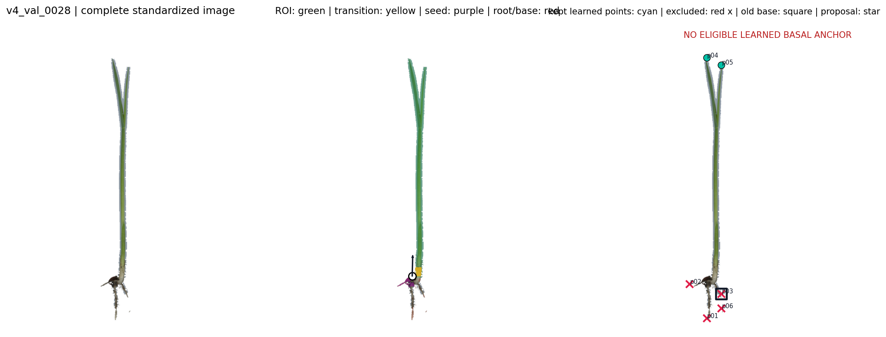
v4_val_0029
shoot retention 0.903 | root/base overlap 0.000 | learned points kept 2/6 | proposed anchor missing
previous manual audit: path=pass, base=correct · 0点仍为根须，不予考虑
绿区是拟用于地上部关键点与路径的有效域；黄区是自动定位的shoot侧过渡带。红叉点将被排除，黄色星号只能从现有学习点中选择。
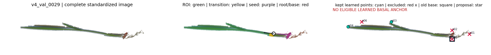
v4_val_0030
shoot retention 1.000 | root/base overlap 0.024 | learned points kept 2/7 | proposed anchor missing
previous manual audit: path=fail, base=wrong · 上方小叶子漏叶，2，4根系错误，根系基部（0）错误
绿区是拟用于地上部关键点与路径的有效域；黄区是自动定位的shoot侧过渡带。红叉点将被排除，黄色星号只能从现有学习点中选择。
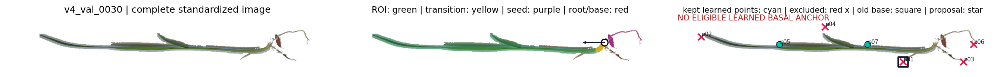
v4_val_0031
shoot retention 0.909 | root/base overlap 0.000 | learned points kept 4/8 | proposed anchor missing
previous manual audit: path=fail, base=wrong · 1，4，6点错误，基部根系应在种子上方开始计算，不考虑根须
绿区是拟用于地上部关键点与路径的有效域；黄区是自动定位的shoot侧过渡带。红叉点将被排除，黄色星号只能从现有学习点中选择。
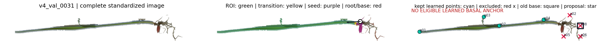
v4_val_0032
shoot retention 0.903 | root/base overlap 0.008 | learned points kept 0/6 | proposed anchor missing
previous manual audit: path=pass, base=wrong · 根基部应在点1下方位置，2判断错误，3和4为根须舍去
绿区是拟用于地上部关键点与路径的有效域；黄区是自动定位的shoot侧过渡带。红叉点将被排除，黄色星号只能从现有学习点中选择。
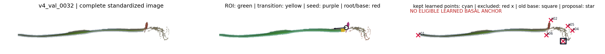
v4_val_0033
shoot retention 0.962 | root/base overlap 0.099 | learned points kept 5/9 | proposed anchor p05
previous manual audit: path=pass, base=wrong · 错连根须，2，5，6应舍去。根部判断错误，应为点2旁边的位置
绿区是拟用于地上部关键点与路径的有效域；黄区是自动定位的shoot侧过渡带。红叉点将被排除，黄色星号只能从现有学习点中选择。
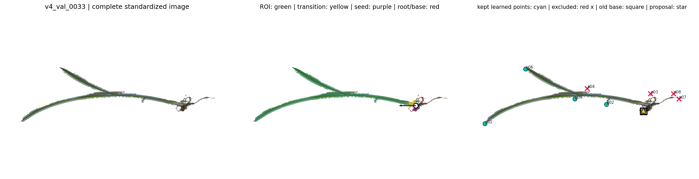
v4_val_0034
shoot retention 0.966 | root/base overlap 0.002 | learned points kept 3/7 | proposed anchor p06
previous manual audit: path=pass, base=wrong · 3点有误；0和2为根须应舍去
绿区是拟用于地上部关键点与路径的有效域；黄区是自动定位的shoot侧过渡带。红叉点将被排除，黄色星号只能从现有学习点中选择。
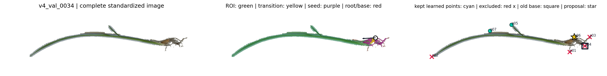
v4_val_0035
shoot retention 0.987 | root/base overlap 0.012 | learned points kept 4/10 | proposed anchor p09
previous manual audit: path=pass, base=correct · 1、2、4、7为根须应舍去
绿区是拟用于地上部关键点与路径的有效域；黄区是自动定位的shoot侧过渡带。红叉点将被排除，黄色星号只能从现有学习点中选择。
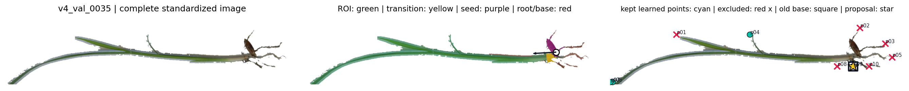
v4_val_0036
shoot retention 0.976 | root/base overlap 0.045 | learned points kept 5/9 | proposed anchor missing
previous manual audit: path=fail, base=correct · 路径基本正确，但2，5，7点不应存在，他们都是根系结构，基本不在考虑范围内
绿区是拟用于地上部关键点与路径的有效域；黄区是自动定位的shoot侧过渡带。红叉点将被排除，黄色星号只能从现有学习点中选择。
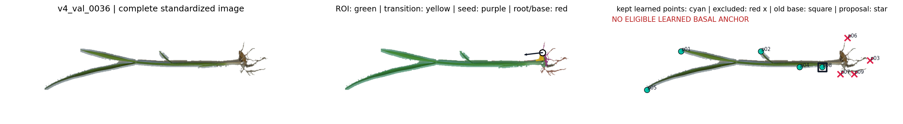
v4_val_0037
shoot retention 0.986 | root/base overlap 0.000 | learned points kept 1/5 | proposed anchor missing
previous manual audit: path=blank, base=wrong · 2点有误应再偏下一点；1为根须应舍去
绿区是拟用于地上部关键点与路径的有效域；黄区是自动定位的shoot侧过渡带。红叉点将被排除，黄色星号只能从现有学习点中选择。
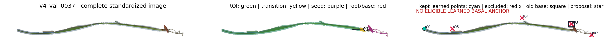
v4_val_0038
shoot retention 0.996 | root/base overlap 0.142 | learned points kept 0/5 | proposed anchor missing
previous manual audit: path=pass, base=wrong · 点1在向下一点移到苗内为最适宜，0为根须，舍去即可
绿区是拟用于地上部关键点与路径的有效域；黄区是自动定位的shoot侧过渡带。红叉点将被排除，黄色星号只能从现有学习点中选择。
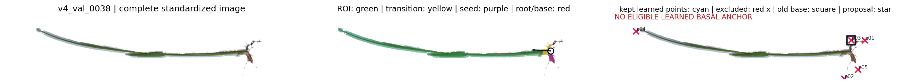
v4_val_0039
shoot retention 0.983 | root/base overlap 0.006 | learned points kept 1/5 | proposed anchor missing
previous manual audit: path=fail, base=correct · 0，2为根须，不考虑
绿区是拟用于地上部关键点与路径的有效域；黄区是自动定位的shoot侧过渡带。红叉点将被排除，黄色星号只能从现有学习点中选择。
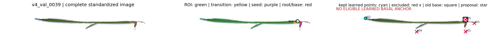
v4_val_0040
shoot retention 0.998 | root/base overlap 0.016 | learned points kept 1/4 | proposed anchor missing
previous manual audit: path=fail, base=correct · 器官路径没有连接完全，2前仍然有一部分未被识别，左侧较长叶片段及叶尖未恢复，路径只覆盖到叶片中部，此外1为根须点，不予考虑（算在错连中了）
绿区是拟用于地上部关键点与路径的有效域；黄区是自动定位的shoot侧过渡带。红叉点将被排除，黄色星号只能从现有学习点中选择。
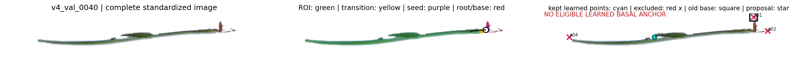